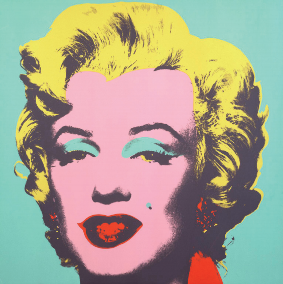

Seria possível reconstituir a história da arte a partir do confronto de dois polos, no interior da própria obra de arte, e ver o conteúdo dessa história na variação do peso conferido seja a um polo, seja a outro. Os dois polos são o valor de culto da obra e seu valor de exposição. À medida que as obras de arte se emancipam do seu uso ritual, aumentam as ocasiões para que elas sejam expostas. A exponibilidade de uma obra de arte cresceu em tal escala, com os vários métodos de sua reprodutibilidade técnica, que a mudança de ênfase de um polo para outro corresponde a uma mudança qualitativa comparável à que ocorreu na pré-história.
BENJAMIN, W. Magia e técnica, arte e política. 3. ed. São Paulo: Editora Brasiliense, 1987, p. 173 (adaptado).
WARHOL, A. Marylin Monroe (1967).
Disponível em: https://www.moma.org/collection/works/61240. Acesso em: 12 jul. 2018 (adaptado).
A partir da leitura do texto e da análise da imagem, avalie as afirmações a seguir.